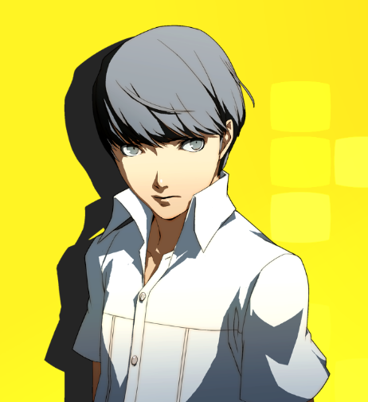
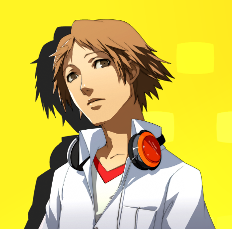
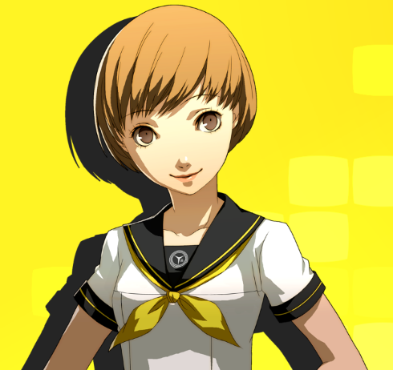
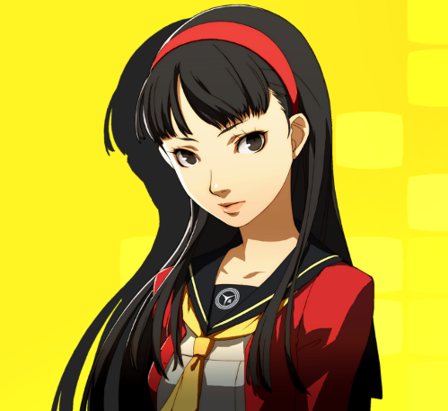
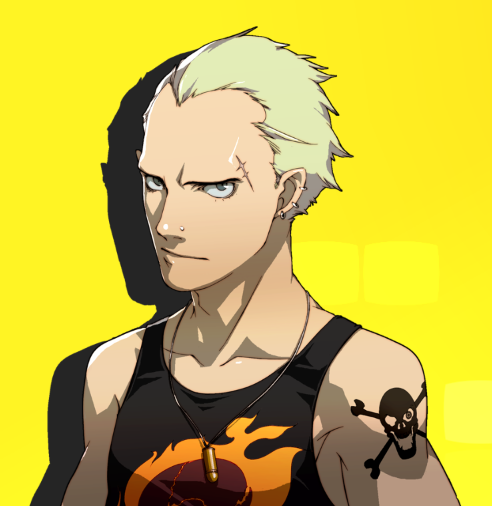
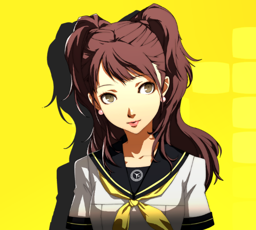
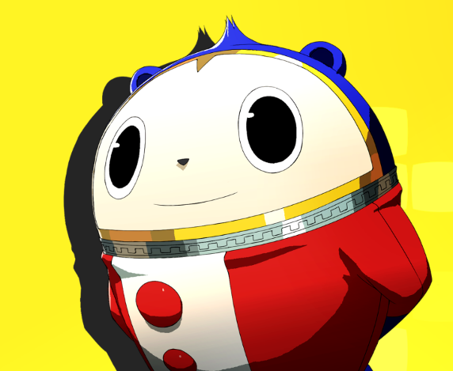
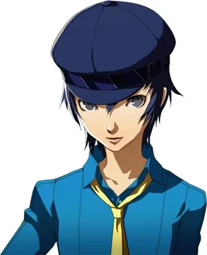

Персонажи Persona 4:
Ю Наруками:
Изначально безымянный протагонист Persona 4, получивший своё имя после релиза Persona 4 Arena. Первый играбельный персонаж. Старшеклассник, переехавший на год в сельский городок Инаба и поступивший в местную старшую школу Ясогами
- Персона: Идзанаги
- Аркана: Дурак
- Стихия способностей: Электричество
Йоске Ханамура:
Второй играбельный персонаж. Одноклассник протагониста в старшей школе Ясогами и сын заведующего сети гипермаркетов "Junes" в Инабе, что также переехал из большого города.
- Персона: Дзирайя/Сусано-о/Такехайя Сусано-о
- Аркана: Маг
- Стихия способностей: Ветер
Чие Сатонака:
Третий играбельный персонаж. Одноклассница протагониста в старшей школе Ясогами, энергичная девчонка, обожающая фильмы про кунг-фу и отрабатывать приёмы из них.
- Персона: Томоэ/Судзука Гонгэн/Хараэдо-но Оками
- Аркана: Колесница
- Стихия способностей: Лёд
Юкико Амаги:
Четвёртый играбельный персонаж. Одноклассница протагониста в старшей школе Ясогами, её родители заведуют гостиницей Амаги в Инабе, и она должна стать следующей заведующей после них. Правда, она очень хочет покинуть Инабу после окончания школы.
- Персона: Конохана Сакуя/Аматерасу/Сумео-Оками
- Аркана: Жрица
- Стихия способностей: Огонь
Кандзи Тацуми:
Пятый играбельный персонаж. Первогодка, в старшей школе Ясогами, ещё со средней школы имеет дурную славу задиры.
- Персона: Таке-Микадзучи/Рокутэн Мао/Такедзи Дзайтен
- Аркана: Император
- Стихия способностей: Электричество
Рисэ Кудзикава:
Одна из главных героинь игры. Известный поп-айдол, решившая вернуться домой в Инабу, чтобы отдохнуть от славы и закончить школу. Первогодка в старшей школе Ясогами.
- Персона: Химико/Кандзеон/Кодзеон
- Аркана: Влюблённые
- Стихия способностей: Нет (не принимает прямого участия в боях)
Тэдди:
Тедди (или Кума в японской версии) шестой играбельный персонаж и главное лицо игры. Родился в Полуночном Канале, пуст внутри своего костюма и не помнит ничего до начала убийств, но постепенно узнаёт об этом мире больше, заводя знакомства с людьми из внешнего мира.
- Персона: Кинтоки-Додзи/Камуи/Камуи-Мошири
- Аркана: Звезда
- Стихия способностей: Лёд
Наото Широганэ:
Седьмой играбельный персонаж. Родом из семьи потомственных детективов. Прибывает в Инабу для расследования убийств и поступает на первый год в старшую школу Ясогами.
- Персона: Сукуна-Хикона/Ямато Такеру/Ямато Сумераги
- Аркана: Фортуна
- Стихия способностей: Свет/Тьма
| Персонаж | Персоны | Аркана | Стихия |
|---|---|---|---|
| Ю | Идзанаги | Дурак | Электричество |
| Йоске | Дзирайя | Маг | Ветер |
| Чие | Томоэ | Колесница | Лёд |
| Юкико | Конохана Сакуя | Жрица | Огонь |
| Кандзи | Таке-Микадзучи | Император | Электричество |
| Рисэ | Химико | Влюблённые | Нет (не принимает прямого участия в боях) |
| Тедди | Кинтоки-Додзи | Звезда | Лёд |
| Наото | Сукуна-Хикона | Фортуна | Свет/Тьма |